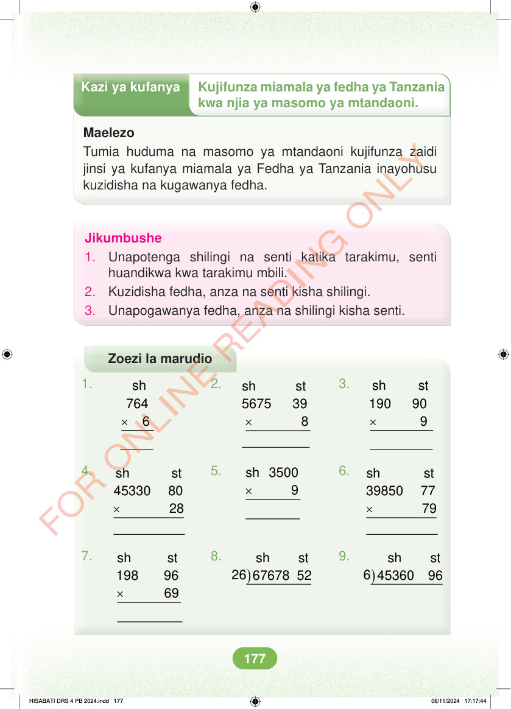

<!DOCTYPE html>
<html lang="sw-TZ"><head><meta charset="utf-8"><meta name="viewport" content="width=device-width,initial-scale=1">
<title>Hisabati: Kitabu cha Mwanafunzi Darasa la Nne</title>
<meta name="title-id" content="pg183_sec001"><meta name="page-section-id" content="192">
<link href="./content/tailwind_output.css" rel="stylesheet"><link href="./assets/libs/fontawesome/css/all.min.css" rel="stylesheet"><link href="./assets/fonts.css" rel="stylesheet">
<style>body{margin:0;background:#eef1ed}main{width:100%;display:flex;justify-content:center;padding:1rem 1rem 5rem;box-sizing:border-box}#content{width:100%;display:flex;justify-content:center}.pdf-page{position:relative;width:min(calc(100vw - 2rem),56rem);aspect-ratio:540.8980102539062/750.6610107421875;background:white;box-shadow:0 4px 24px #0002;overflow:hidden}.pdf-page img{position:absolute;inset:0;width:100%;height:100%;object-fit:fill}</style>
</head><body><main><h1 class="sr-only" id="page-heading">Ukurasa wa 183</h1><div id="content" class="opacity-0"><section role="article" data-section-type="pdf_accessible_page" data-section-id="pg183_sec001" aria-labelledby="page-heading" class="pdf-page"><p class="sr-only" data-id="pg183_gp001_tx001">Kazi ya kufanya Kujifunza miamala ya fedha ya Tanzania kwa njia ya masomo ya mtandaoni. Maelezo Tumia huduma na masomo ya mtandaoni kujifunza zaidi jinsi ya kufanya miamala ya Fedha ya Tanzania inayohusu kuzidisha na kugawanya fedha. Jikumbushe 1. Unapotenga shilingi na senti katika tarakimu, senti huandikwa kwa tarakimu mbili. 2. Kuzidisha fedha, anza na senti kisha shilingi. 3. Unapogawanya fedha, anza na shilingi kisha senti. Zoezi la marudio 1. 2. 3. × × × sh 764 6 sh st 190 90 9 sh st 5675 39 8 5. 6. sh 3500 4. × × × sh st 45330 80 28 sh st 39850 77 79 7. sh st 6 45360 96 8. ) sh st 26 67678 52 9. ) × sh st 198 96 69 HISABATI DRS 4 PB 2024.indd 177 HISABATI DRS 4 PB 2024.indd 177 06/11/2024 17:17:44 06/11/2024 17:17:44</p></section></div></main><div class="relative z-50" id="interface-container"></div><div class="relative z-50" id="nav-container"></div><script src="./assets/offline-preloader.js?v=audiofix-20260824-1"></script><script src="./assets/scorm.js"></script><script src="./assets/base.bundle.local.js?v=audiofix-20260824-1"></script></body></html>